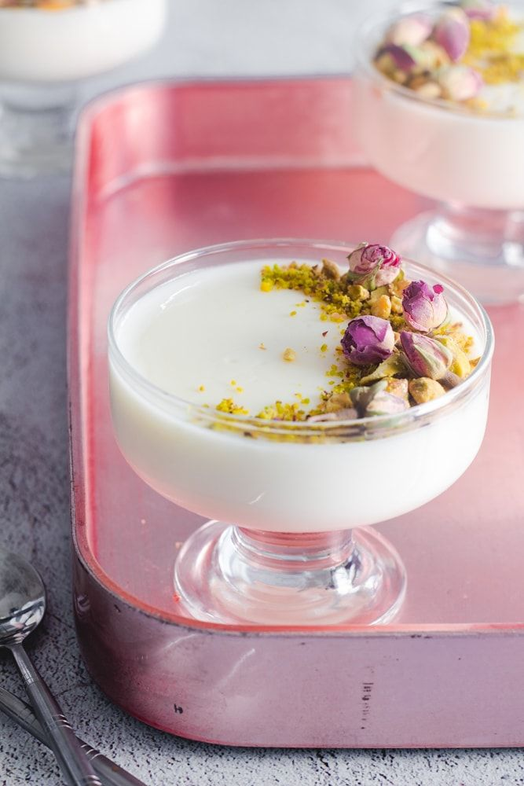
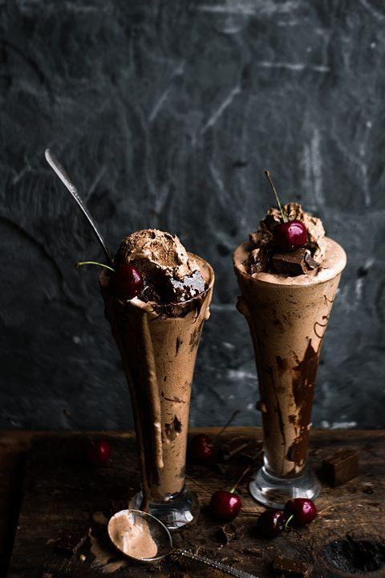
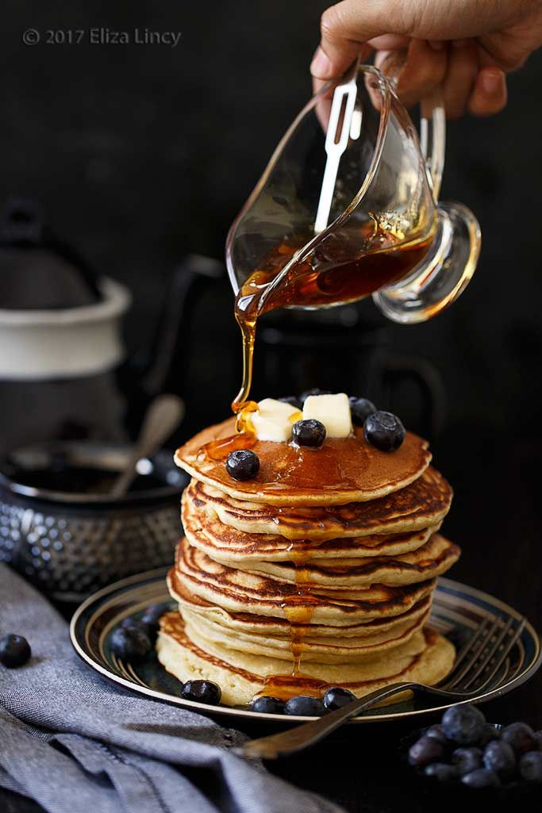
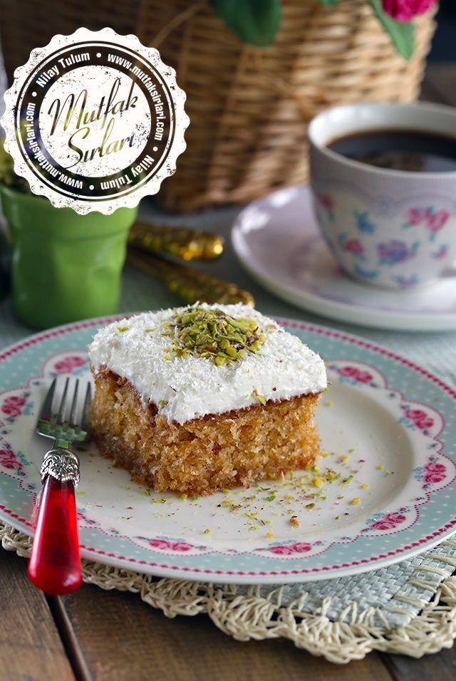

Muhallebi
{kind=link}
Muhallebi yapmak için süt, un ve nişastayı bir tencereye koyup güzelce karıştırın. Karışımınız kaynamaya yakınken şeker ve vanilyayı ilave edip karıştırın. Tenceredeki karışım göz göz olmaya başlayınca tereyağını da ilave ederek iyice karıştırın. Karışımı ocaktan alıp biraz ılınması için bırakın. Ilık muhallebi karışımını kaplara paylaştırdıktan sonra buzdolabında 1 saat kadar bekletip Hindistan cevizi serperek servis edebilirsiniz. Afiyet olsun.
Baklava

Öncelikle baklava yapımında tatlının şerbetini su ve şekeri bir tencerede kaynatıp hazırlayın. Kaynadıktan sonra kısık ateşte 30 dakika daha kaynatıp soğumaya bırakın. Hamur malzemelerini derin bir kabın içinde karıştırıp, hamuru yoğurun. Tezgaha hafif nişasta serperek açabileceğiniz en ince şekilde açın. Fazla nişastayı yufkanın üzerinden atın ve oda sıcaklığında açılan yufkaları 10-15 dakika bekletin. Ardından tepsinin tabanını yağlayın. Açtığınız yufkaların 4 tanesini üst üste koyun. Daha sonra üzerine bolca fıstık ilave edip diğer katlarını da koyun. Üzerine eritilmiş tereyağını da gezdirin. Önceden ısıtılmış 180 derece fırında üzeri kızarıp içi pişene kadar yaklaşık 40 dakika pişirin. Fırından çıkardığınız baklavanın üzerine şerbeti gezdirin. Afiyet olsun.
Dondurma
{kind=link}
İlk önce krem şantiyi 200 ml süt ile koyulaşana kadar çırpalım ve buzdolabında bekletelim. 500 ml sütü uygun bir tencereye alalım, içine yarım çay bardağı şeker ekleyelim ve karıştıralım. En kısık ateşte kaynatalım. Sütümüz kaynamaya başlarken içine salep ve vanilin ekleyip 2-3 dakika karıştıralım. Ara ara karıştırarak en kısıkta 20 dakika kaynatalım. Sütümüz ılıdıktan sonra içine hazırladığımız şantiyi ekleyip pürüzsüz bir kıvam alana kadar nazikçe karıştıralım. Karışımın yarısını sade olarak dondurma kabına alalım. Diğer yarısına 1-2 tatlı kaşığı kakao tozu ve damla çikolata ekleyip iyice karıştırıyoruz. Sürenin sonunda dondurmaları dolaptan çıkartalım ve çatal yardımı ile karıştıralım. Son kez karıştırdıktan sonra kabın kapağını kapatarak 1 gece dondurucuda bekletelim ve servis edelim. Afiyet olsun!
Pankek
{kind=link}
Pankek yapmak için öncelikle yumurtalar ve şekeri uygun bir karıştırma kabına alarak iyice çırpalım. Süt, un, kabartma tozu, vanilya ilave çırpma teli ile çırpalım. Siz dilerseniz mikser ile de çırpabilirsiniz. Kek kıvamından biraz daha koyu olacak şekilde hamur hazırlayalım. Teflon ya da yapışmaz bir tavaya az sıvı yağı dökelim, fırça yardımı ile her tarafına dağıtalım. Sıvı yağı az kullanmak pankek yapmanın püf noktalarındandır. Dilerseniz peçete ile de tavaya dağıtabilirsiniz. 1 büyük kaşık hamur dökülerek hamurun kendi kendine yayılmasını bekleyelim. Üzeri göz göz olmaya başlayan pankeklerimizi spatula yardımı ile ters çevirelim. Diğer taraflarını da pişirelim. Her iki tarafı da pişen pankeklerimizi servis tabağına alalım.
Kıbrıs Tatlısı
{kind=link}
Kıbrıs tatlısı yapmak için öncelikle şerbet hazırlanmalıdır çünkü kekin üzerine şerbetin soğuk olarak dökülmesi gerekiyor. Şerbet hazır olunca da ocağın altını kapatın ve vanilyayı ekleyip soğuması için bekletin. Keki için yumurtaları ve şekeri iyice çırpın, diğer malzemeleri de ekleyip karıştırın. 160 derece fırında 30 dakika pişirip fırından çıkar çıkmaz soğuk şerbeti üzerine dökün, soğuması için bekletin. Kreması yapmak için krem şanti hariç diğer malzemeleri bir tencerede muhallebi kıvamına gelene dek pişirin. Ocağın altını kapatın, toz krem şantiyi ekleyin ve mikser ile 5 dakika çırpın. Soğumuş şerbetli kekin üzerine bu muhallebiyi dökün. Üzerine bolca Hindistan cevizi ya da ceviz serpin. Tatlıyı buzdolabında en az 2-3 saat bekletip servis yapın.